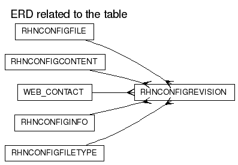

RHNCONFIGREVISION
DDL scriptColumns
| Name | Type | Nullable | Default value | Comment |
|---|
| ID | NUMBER(38) | N | | |
| REVISION | NUMBER(38) | N | | |
| CONFIG_FILE_ID | NUMBER(38) | N | | |
| CONFIG_CONTENT_ID | NUMBER(38) | N | | |
| CONFIG_INFO_ID | NUMBER(38) | N | | |
| DELIM_START | VARCHAR2(16) | N | | |
| DELIM_END | VARCHAR2(16) | N | | |
| CREATED | DATE | N | (sysdate) | |
| MODIFIED | DATE | N | (sysdate) | |
| CONFIG_FILE_TYPE_ID | NUMBER(38) | N | (1) | |
| CHANGED_BY_ID | NUMBER(38) | Y | (null)
| |
Primary key:
| Constraint Name | Columns |
|---|
| RHN_CONFREVISION_ID_PK | ID
|
Foreign Keys:
Options:
| Option | Settings |
|---|
| Tablespace | DATA_TBS |
| Index Organized | No |
| Generated by Oracle | No |
| Clustered | No |
| Nested | No |
| Temporary | No |
Indexes:
Referenced by:
Triggers
RHN_CONFREVISION_ACCT_TRIG
Legend: string keyword reserved word operator
CREATE TRIGGER
rhn_confrevision_acct_trig
after insert on rhnConfigRevision
for each row
REFERENCING NEW AS NEW OLD AS OLD
declare
org_id number;
available number;
added number;
begin
select cc.org_id id,
oq.total + oq.bonus - oq.used available,
content.file_size added
into org_id, available, added
from rhnConfigContent content,
rhnOrgQuota oq,
rhnConfigChannel cc,
rhnConfigFile cf
where cf.id = :new.config_file_id
and cf.config_channel_id = cc.id
and cc.org_id = oq.org_id
and :new.config_content_id = content.id;
if added gt; available then
rhn_exception.raise_exception('not_enough_quota');
end if;
end;
RHN_CONFREVISION_DEL_TRIG
Legend: string keyword reserved word operator
CREATE TRIGGER
rhn_confrevision_del_trig
before delete on rhnConfigRevision
for each row
REFERENCING NEW AS NEW OLD AS OLD
declare
cursor snapshots is
select snapshot_id id
from rhnSnapshotConfigRevision
where config_revision_id = :old.id;
begin
for snapshot in snapshots loop
update rhnSnapshot
set invalid = lookup_snapshot_invalid_reason('cr_removed')
where id = snapshot.id;
delete from rhnSnapshotConfigRevision
where snapshot_id = snapshot.id
and config_revision_id = :old.id;
end loop;
end;
RHN_CONFREVISION_MOD_TRIG
Legend: string keyword reserved word operator
CREATE TRIGGER
rhn_confrevision_mod_trig
before insert or update on rhnConfigRevision
for each row
REFERENCING NEW AS NEW OLD AS OLD
begin
:new.modified := sysdate;
end;